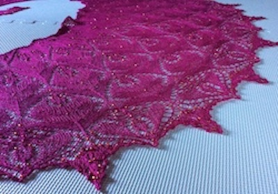
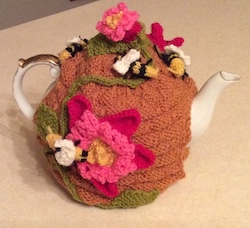
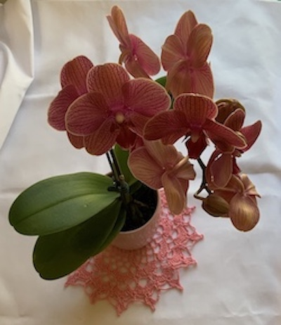

Hopefully, I will learn more technologies in the coming weeks.
I retired from teaching in 2010. All the creativity and energy it took for me to be a full-time Kindergarten and ESL teacher was diverted into
Hobbies!



Here is a list of all the ridiculous post-retirement activities that took up my precious time:
I have done most of the stereotypical things that grandmas do, without having grandchildren. I am now finished with all of that. I am learning to code! It is very exciting to learn so many new things. I told my daughter, who is an Epicodus alumnus, that I am already a Senior Developer. I am a developer and I am over 65!